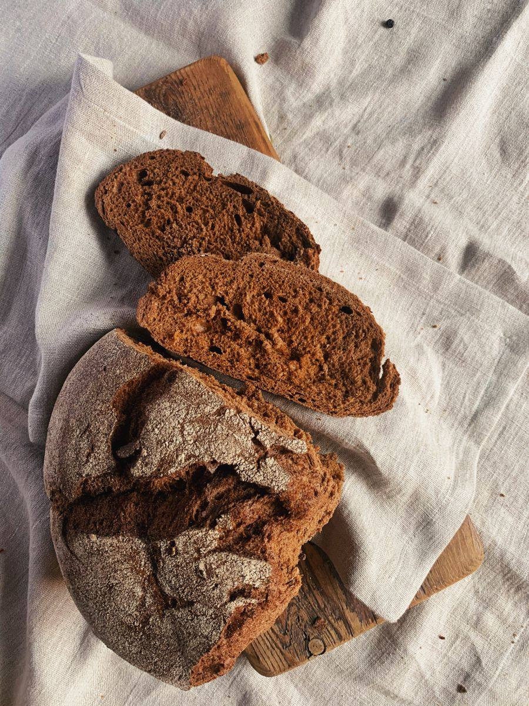

Russian Black Bread

Description
Black Russian Bread is a profound and unforgettable loaf. This is not a mild, sandwich rye—it is a dense, moist, and intensely flavorful bread, steeped in tradition. Its near-black color comes from a generous use of dark rye flour, molasses, and a touch of cocoa or coffee, which deepen the hue without imparting a sweet or chocolatey taste.
The flavor is complex, slightly sour, and deeply earthy, with sweet notes from molasses and a subtle bitterness from burnt sugar or caramel. The crumb is tight and chewy, while the crust is typically dark and firm. It's a bread that improves with age, becoming more nuanced over a day or two. Perfect sliced thinly and slathered with salted butter, topped with smoked fish, or served alongside a robust soup or stew.
Ingredients
For the Sourdough Starter (Levain):
- 100 g (about ¾ cup) dark rye flour
- 100 g (about ½ cup) warm water
- 1 tablespoon active sourdough starter (or ½ teaspoon instant yeast for a quick version)
For the Main Dough:
- All of the prepared sourdough levain (from above)
- 300 g (about 2 ½ cups) dark rye flour
- 150 g (about 1 ¼ cups) bread flour or high-gluten flour (for better structure)
- 250 g (about 1 cup) strong brewed coffee or espresso, cooled
- 80 g (about ¼ cup) molasses (not blackstrap—it's too bitter)
- 2 tablespoons vegetable oil or melted butter
- 1 tablespoon cocoa powder (unsweetened, Dutch-process preferred)
- 2 teaspoons salt
- 1 tablespoon caraway seeds (optional, but traditional)
- 1 tablespoon burnt sugar (aka zhalenye or caramel coloring) or 1 teaspoon instant coffee granules for extra color (optional)
For the Topping (Optional):
- A mixture of rolled oats, sunflower seeds, or more caraway seeds to sprinkle on top.
Recipe
Total Time: 24-36 hours (includes fermentation)
Active Time: 30 minutes
Yield: 1 large loaf
Day 1: Evening – Prepare the Levain
- In a medium bowl, mix the 100g dark rye flour, 100g warm water, and your sourdough starter (or instant yeast) until a thick paste forms.
- Cover loosely with plastic wrap or a damp cloth and let it ferment at room temperature for 12-16 hours, or until it is very bubbly and has a pleasant sour aroma.
Day 2: Mixing and Baking
- Combine Wet Ingredients: In a large mixing bowl or the bowl of a stand mixer, combine the brewed coffee, molasses, vegetable oil, cocoa powder, and optional burnt sugar. Stir until smooth.
- Add Levain & Flours: Add the entire prepared levain to the wet ingredients and stir to break it up. Add the 300g dark rye flour, 150g bread flour, salt, and caraway seeds.
- Knead the Dough: Mix until a very stiff, sticky dough comes together. Rye dough is glutinous and sticky, not elastic like wheat dough. Knead with a dough hook or by hand in the bowl for 5-7 minutes. It will remain quite dense.
- First Rise: Shape the dough into a ball. Place it back in a lightly oiled bowl, cover tightly, and let it rise in a warm place for 2-3 hours. It will not double in size like wheat bread; a 50% increase is typical.
- Shape: Turn the dough out onto a surface lightly dusted with rye flour. Gently shape it into a round boule or a long oval loaf (batard). Avoid degassing it too much.
- Second Rise: Place the shaped loaf on a parchment-lined baking sheet or into a well-floured proofing basket (banneton). Cover and let proof for 1-2 hours. Meanwhile, preheat your oven to 425°F (220°C). Place a deep roasting pan on the oven's bottom rack.
- Score & Steam: Just before baking, slash the top of the loaf with a sharp knife or lame in a simple pattern (an "X" or a few diagonal slashes). This controls expansion. Pour a cup of hot water into the preheated roasting pan to create steam, then quickly place the bread on the middle rack.
- Bake: Bake at 425°F (220°C) for 20 minutes. Then, reduce the oven temperature to 375°F (190°C) and bake for an additional 40-50 minutes. The bread is done when it sounds hollow when tapped on the bottom, and an internal thermometer reads 205-210°F (96-99°C).
- Cool Completely: This is crucial! Let the bread cool on a wire rack for at least 4 hours, preferably overnight. Rye bread's texture and flavor are still developing as it cools. Cutting it too soon will make it seem gummy.
Storage: Wrap cooled bread in beeswax wrap or a cotton bag and store at room temperature for up to 5 days. It also freezes exceptionally well for up to 3 months. Slice before freezing for easy toasting.
Enjoy your deeply flavorful, authentic Black Russian Rye Bread!
Home